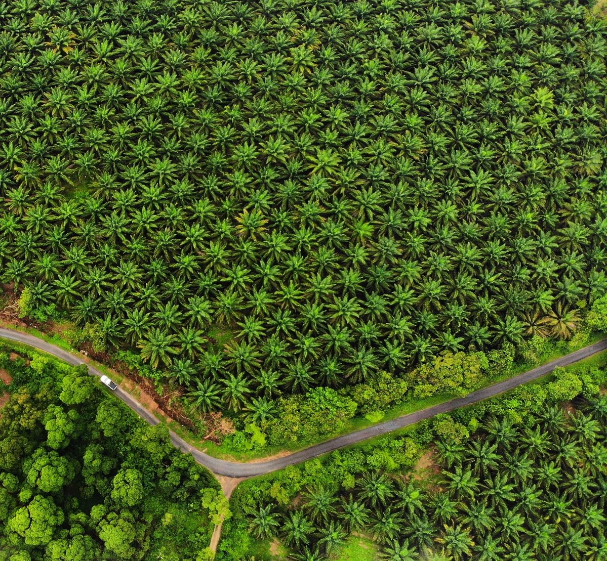
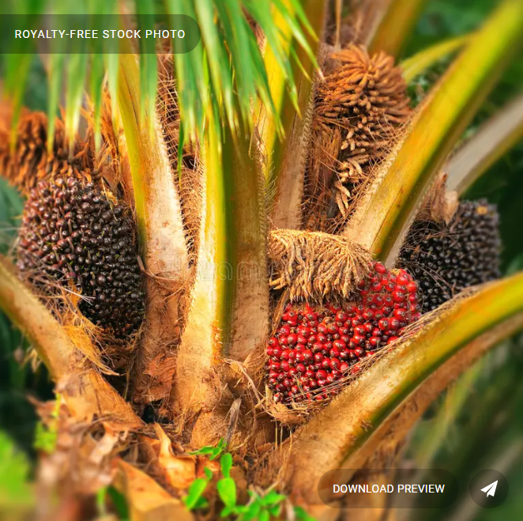
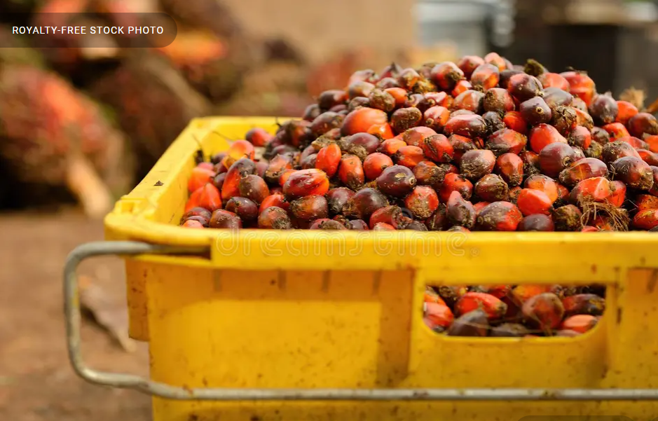

Sistem Informasi Manajemen
Administrasi Sawit
Transparansi penuh, akurasi data real-time, dan pengelolaan rantai pasok kelapa sawit yang efisien — semua dalam satu platform terintegrasi.
Akses Sistem SIMASMembangun Ekosistem Sawit yang Transparan & Akuntabel
SIMAS hadir sebagai solusi digital end-to-end untuk pengelolaan administrasi kelapa sawit. Kami percaya bahwa transparansi adalah fondasi dari kepercayaan — mulai dari petani, tukang muat, hingga pengepul.
Dengan teknologi pencatatan real-time, setiap pihak dalam rantai nilai mendapatkan informasi yang akurat, adil, dan dapat dipertanggungjawabkan. Tidak ada lagi ketidakjelasan dalam pembagian hasil.

Fitur Unggulan SIMAS
Dirancang khusus untuk kebutuhan industri kelapa sawit Indonesia
Kalkulasi Tonase Akurat
Hitung berat bersih sawit secara otomatis dari data berat kotor dan tara truk. Eliminasi kesalahan manual dan sengketa timbangan dengan akurasi hingga 0.01 Kg.
- Koreksi berat kotor & tara
- Histori per perjalanan
- Export laporan PDF
Transparansi Gaji
Setiap tukang muat dan administrator menerima rincian gaji yang dihitung otomatis berdasarkan persentase tetap dari total pendapatan. Tidak ada manipulasi, semua tercatat.
- 3% untuk Tukang Muat
- 3% untuk Administrator
- Slip gaji digital
Profit Pengepul
Visualisasikan keuntungan bersih pengepul setelah semua distribusi. Dashboard analitik mingguan dan bulanan membantu perencanaan bisnis yang lebih baik.
- Kalkulasi profit bersih
- Grafik tren harga
- Proyeksi pendapatan
Sistem Bagi Hasil yang Adil & Transparan
SIMAS menerapkan formula distribusi yang disepakati bersama, otomatis dihitung setiap transaksi, tanpa intervensi manual.

Hubungi Kami
Ada pertanyaan tentang SIMAS? Tim kami siap membantu Anda
Jl. Perkebunan Sawit No. 12,
Kab. Pelalawan, Riau 28300
+62 812-3456-7890
info@simas-sawit.id
Senin – Sabtu: 07.00 – 17.00 WIB